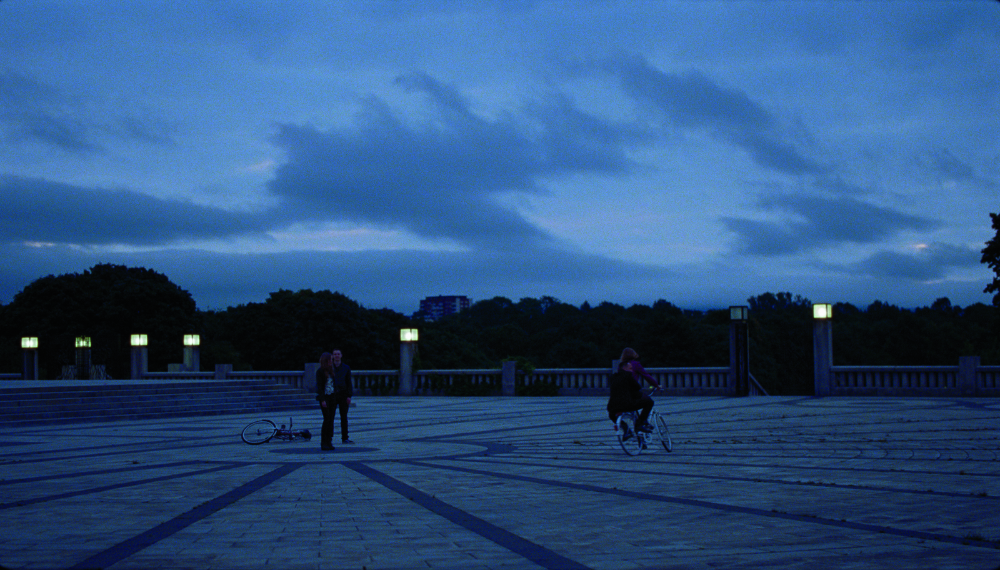
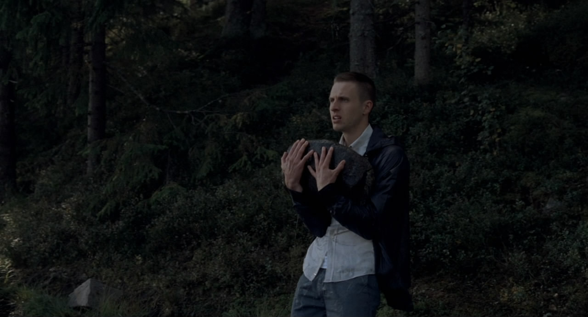
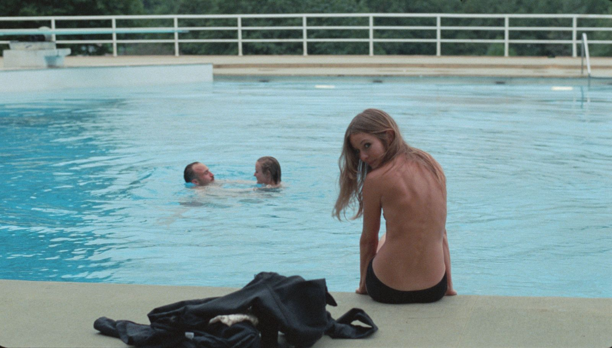
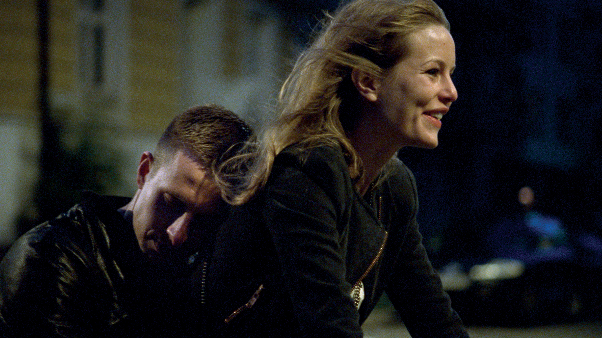

" It'll get better. I'll all work out.
Except it won't. "
One day in the life of Anders, a young recovering drug addict, who takes a brief leave from his treatment center to interview for a job and catch up with old friends in Oslo.
Oslo, August 31st is a 2011 Norwegian drama film directed by Joachim Trier. It is loosely based on the novel Will O' the Wisp by Pierre Drieu La Rochelle.